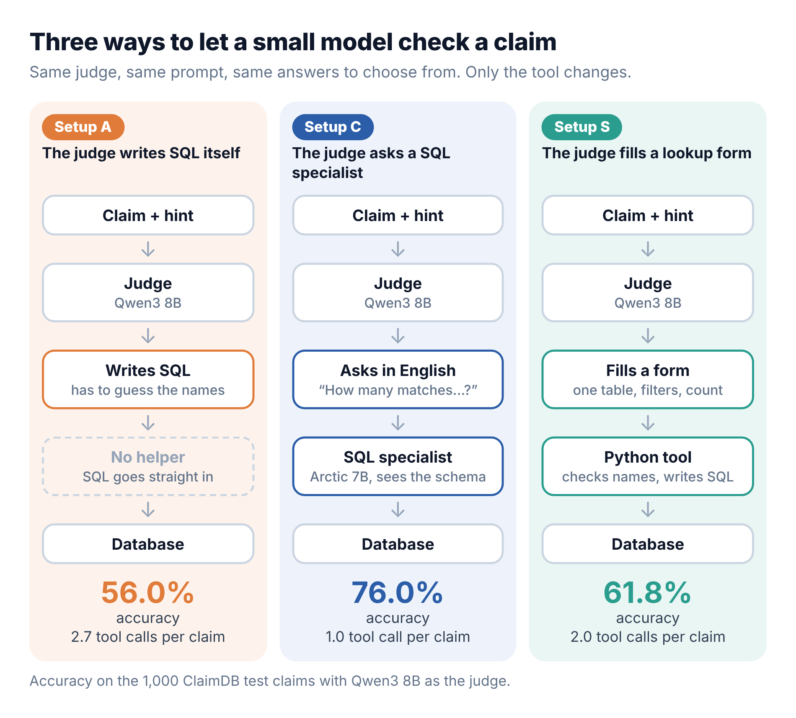
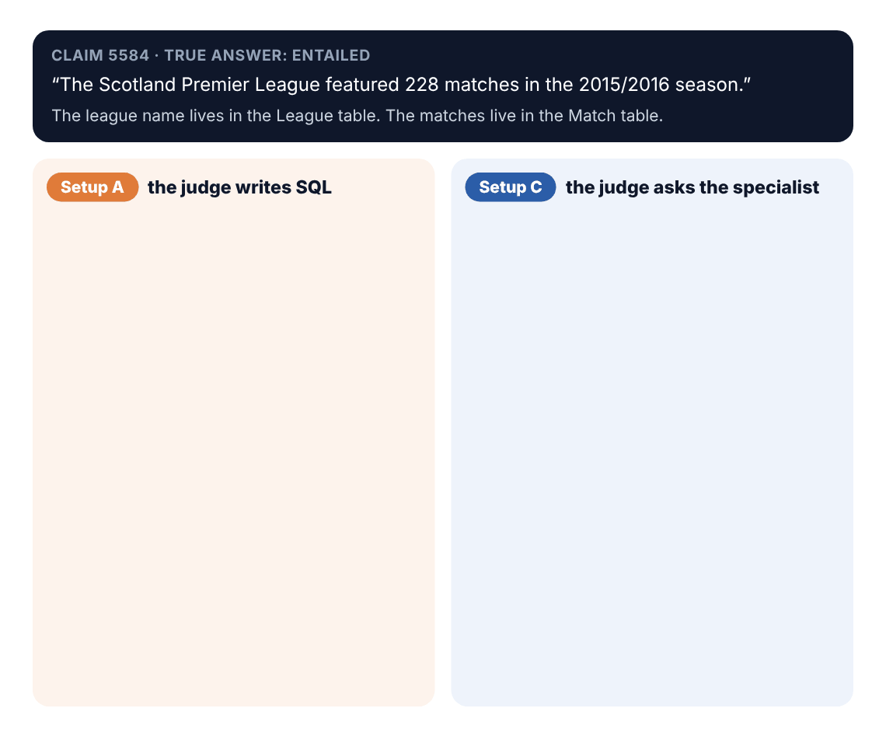
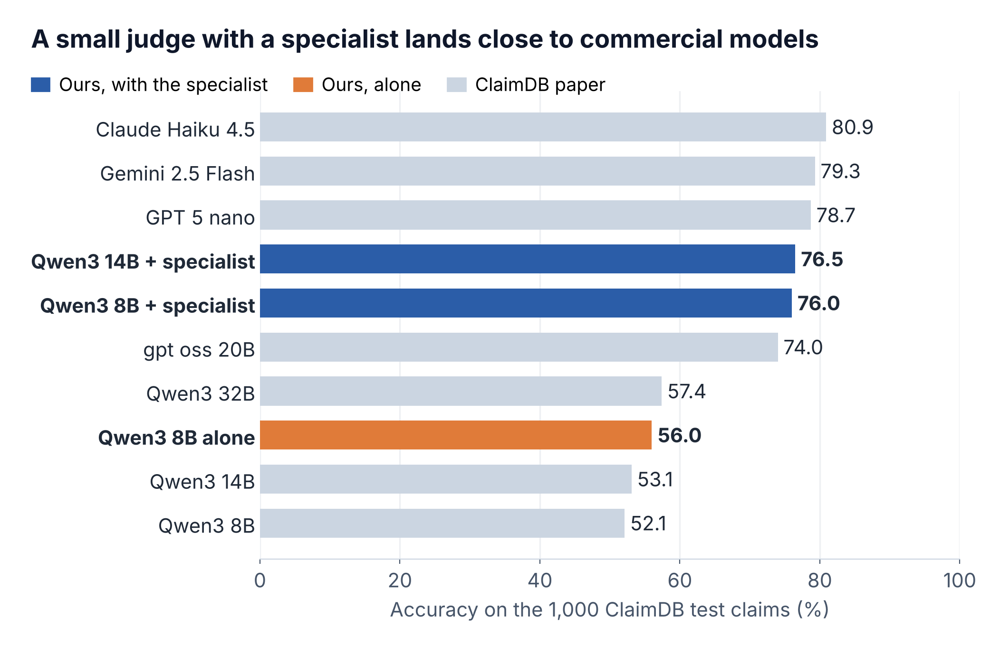
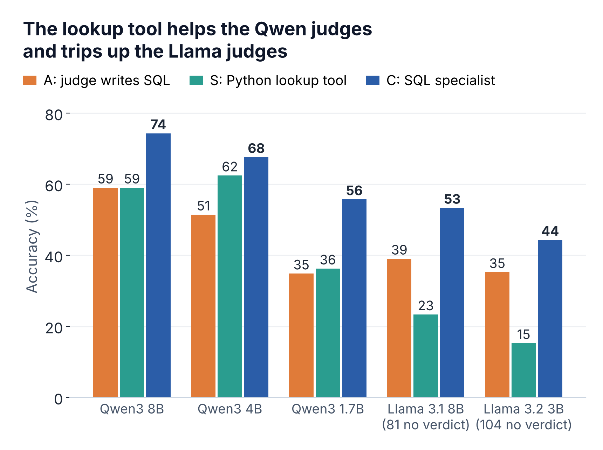
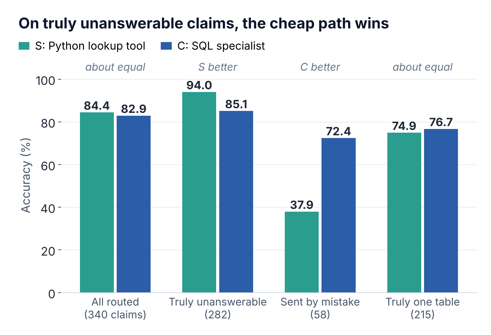
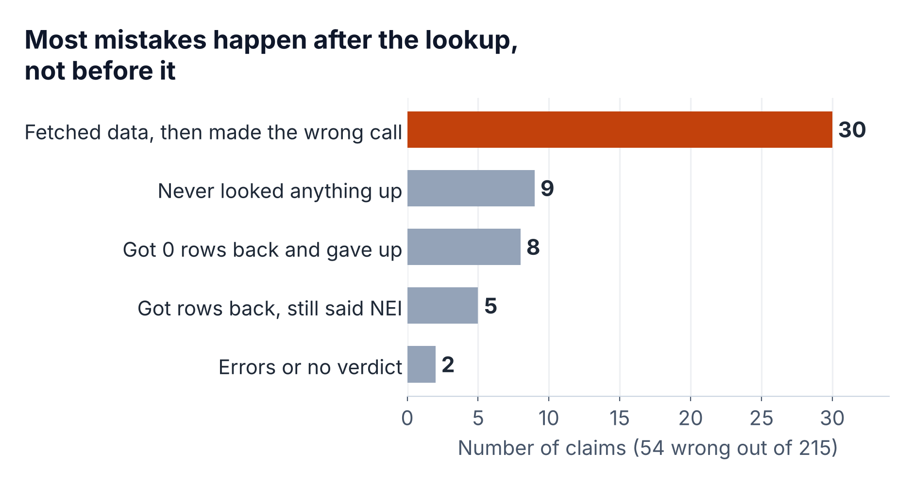
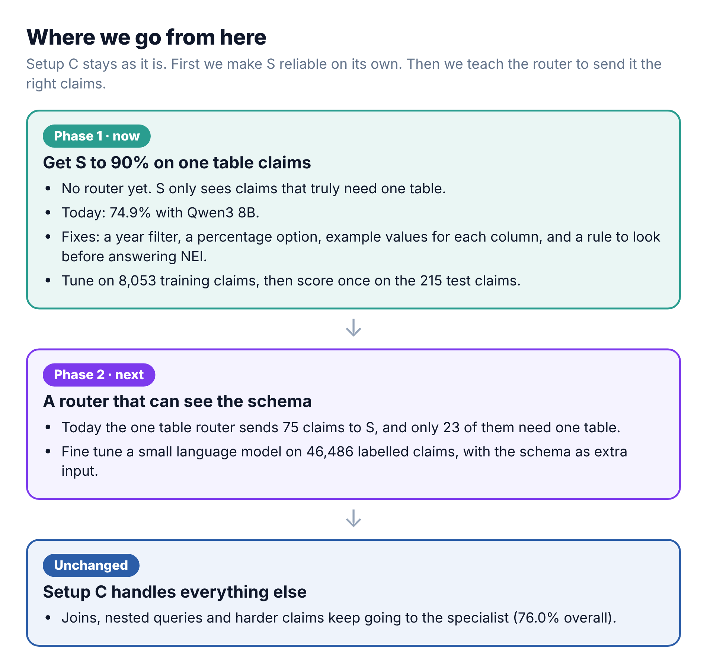

Every day we read numbers that come out of a database. A sports site says a league played 228 matches last season. A company dashboard says sales went up in March. Someone has to check that claims like these actually match the data.
Large language models can do that job if you let them run SQL queries. The best ones are big commercial models, though. They cost money on every call and you can't run them on your own computer. We wanted to see how far a small open model could get instead.
We used ClaimDB [1], a recent benchmark with 1,000 test claims over real databases, some with millions of rows. For each claim the model answers ENTAILED (the data backs it up), CONTRADICTED (the data says otherwise) or NOT ENOUGH INFO (the data can't settle it). We shorten the last one to NEI. In the ClaimDB paper, Qwen3 8B scores just 52.1%.
Small models rarely fail because they reason badly. They fail because they write bad SQL. Take the claim "The Scotland Premier League featured 228 matches in the 2015/2016 season." Qwen3 8B first asked for a table called matches, which doesn't exist. It then listed the tables, poked around a bit and gave up with NEI. The claim is true. One join between two tables would have shown it.
This happens a lot. Look at ClaimDB's own runs of small open models on true or false claims. When a judge queried a missing table or column, it was right only about one time in five.
So we tried three setups (Figure 1). In all of them a small model, which we call the judge, reads the claim and gives the verdict. The only thing that changes is the tool it gets.
In setup A the judge writes SQL itself. This is ClaimDB's own baseline. In setup C the judge asks a question in plain English. A second model trained only to write SQL, the specialist, turns that question into a query. Our specialist is Arctic Text2SQL R1 7B [5], and it sees the whole database layout, so it never has to guess names. Setup S is the lightweight option. The judge fills in a simple lookup form with one table, a few filters and maybe a count or a sum. About 250 lines of Python check the names, write the SQL and run it. No second model is involved.

Handing the SQL to a specialist lifts Qwen3 8B from 56.0% to 76.0%. Figure 2 shows why, using the Scotland claim. The judge asks one question, the specialist joins the two tables, and 228 comes back.

That puts our 8B judge ahead of every open model in the ClaimDB paper. It also sits a few points behind small commercial models like GPT 5 nano (Figure 3). One caveat. Our harness scores Qwen3 8B about 4 points higher than ClaimDB's did, so part of that gap may come from the setup and not the specialist.

It isn't a lucky result for one model either. Every small judge we tried gained between 13 and 20 points (Figure 4). A bigger judge, Qwen3 14B, did no better than the 8B one. That tells us the SQL was the real bottleneck all along.

Setup S on its own lands in the middle, at 61.8%. That is better than writing SQL but well short of the specialist. It does have one real strength, though. It is very good at recognising claims the database simply can't answer.
Figure 5 shows a nice example. The claim says a client's junior credit card runs on the Mastercard network, but the database never stores card networks. The specialist couldn't answer the question it was asked, so it quietly answered a different one. It got an empty result back, and the judge took that as a no. With the lookup tool, the judge found the card, saw there was nothing about networks, and correctly said NEI.

The form doesn't suit every judge. The Qwen models handled it well. The Llama models kept filling it in wrong, and many of their claims ended without any answer at all (Figure 6).

If S is good at unanswerable claims and C is good at the rest, the obvious next step is a router. That is a small classifier that reads the claim and sends it one way or the other. We trained ours on about 40,000 claims from ClaimDB's training data. Unanswerable claims turned out to be easy to spot from their wording alone. Phrases like "If audience popularity polls were considered" or "the most aesthetically pleasing" give them away.
On the 340 claims our router sent to S, the lookup tool was just as accurate as the specialist and about 30% faster (Figure 7). On the claims that really were unanswerable, it was clearly better. The cost is the handful of answerable claims the router sends there by mistake, where the specialist still wins easily.

Our very first idea was to paste the database layout straight into the judge's prompt. That fixed the made up table names, but the judge then gave up on more than half the claims without running a single query. Knowing the names wasn't enough.
We also expected S to be a natural fit for simple claims that need just one table. On those claims it comes close to the specialist (74.9% against 76.7%), but we couldn't route them reliably. Whether a claim needs one table depends on how the database is organised, and the router only sees the claim's text. In our 210 claim sample, it sent 75 claims to S and only 23 of them actually needed one table.
When S does get a simple claim wrong, it has usually fetched the data just fine and then stumbled on the last step (Figure 8). It has no date functions and can't work out percentages. To check that "236 users created their accounts after 2013 and have more than 10 views", it compared full dates with the number 2013 and counted 3,278 users.

Finally, S saved less time than we hoped. Most of the time goes into the judge's own thinking, not into the specialist.
Setup C stays as it is. All the remaining work is on the cheap path (Figure 9). First, we want the lookup tool to get at least 90% of one table claims right. That starts with a year filter, a percentage option and better hints about what each column holds. After that, we'll train a smarter router that sees the database layout as well as the claim, so it can tell which claims really are simple.

Early work checked claims against small tables that fit in a prompt, like TabFact [3]. Newer systems such as Thucy [2] and ClaimDB [1] let large models query full databases. Text to SQL models like Arctic [5] and OmniSQL [6], built on benchmarks such as BIRD [4], have become very good at writing queries. They were never meant to judge claims, though. Our work sits between the two. Instead of making the judge bigger, we give it a better tool, in the spirit of tool using agents like ReAct [7]. Our judges are Qwen3 [8] and Llama 3 [9] models.
A few limits are worth keeping in mind. We tested on one benchmark, and our specialist was trained on similar data, which may help it. The commercial scores come from the ClaimDB paper, not our own runs. Some comparisons use the smaller 210 claim sample. And the router may lean on the way ClaimDB happens to phrase its unanswerable claims.
If you want a small model to check facts against a database, our advice is simple. Don't make it write SQL. Give it a specialist to talk to, and keep a simple lookup tool around for the claims that can't be answered.
Code and full results: github.com/Kushagra-Agnihotri/claimdb-specialist-sql. Every number in this post can be recomputed from the raw result files with a script in the Kanishk/blog folder.
Team: Kushagra Agnihotri, Kanishk Didwania and Navtej Sai Singh Dua, mentored by Prof. Dhruv Kumar, Dr. Krishna Garg and Dr. Chirag Chhablani. Course: [course name and code], BITS Pilani.
AI use: We used Claude to help write code, analyse results and edit the language of this post.
Thanks to the ClaimDB authors for releasing their benchmark, code and model runs.